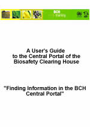

Descargar el manual completo en PDF
Este módulo presenta al usuario los componentes del Portal Central del CIISB y provee orientación en cómo buscar información en las bases de datos del mismo.
Público
El objetivo de este módulo es orientar a los usuarios del Centro de Intercambio de Información sobre Seguridad de la Biotecnología (CIISB). Está diseñado para un público no técnico, con escaso o ningún conocimiento del Protocolo de Cartagena y del CIISB, pero que necesite obtener y utilizar datos. El acceso a la información está disponible a todos los usuarios, pero el acceso a las funciones de registro del CIISB está restringido a usuarios que tienen un nivel particular de acceso, por ejemplo: Puntos Focales Nacionales (CFN) y personal encargado del ingreso de datos.
Propósito
Este módulo ofrece información detallada sobre las bases de datos en la sección Búsqueda de información del Portal Central. También explica cómo buscar información en el Portal Central del CIISB. El Portal Central en línea permite a los gobiernos administrar su información directamente en las bases de datos del CIISB. Estas bases de datos, que son el componente medular del CIISB, pueden ser consultadas para obtener información relevante y útil sobre el Protocolo de Cartagena.
Cada una de las siguientes secciones orientará al usuario sobre los diferentes procedimientos para obtener la mayor cantidad posible de información pertinente a través del Portal Central del CIISB.